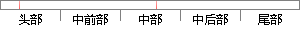

学生宿舍管理是高校管理工作的重要组成部分，在学校的发展中有着非常重要的作用和重大的现实意义。
片段位置图

相似结果|
相似片段 1：现状学生宿舍管理是高校管理工作的重要组成部分，在学校的发展中有着非常重要的作用和重大的现实意义。而随着计算机技术和互联网技术在各个领域的日益渗透，许多国内外高校都提出了实现数字化校园建设n3的发展规划
|
※ 片段修改建议 ※
近似词参考：- 管理：办理 经管 治理
- 重要：主要 紧张 首要
- 学校：黉舍
- 作用：感化
- 重大：庞大
系统自动生成语句：学生宿舍办理是高校办理工作的主要组成部分，在黉舍的发展中有着非常主要的感化和庞大的现实意义。
注：本片段修改建议为系统自动生成，仅供参考。